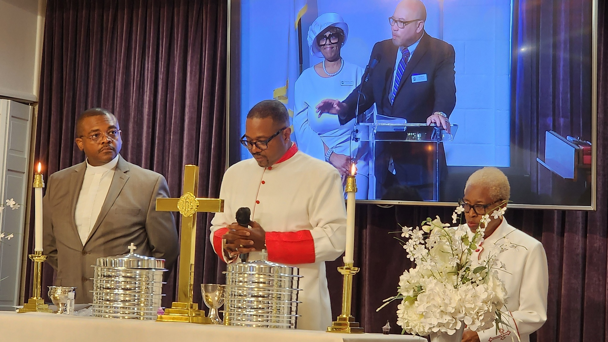

Reverend Clarence A. Robinson succeeded Reverend Sherman W. Phillips and was officially called to the pastorate at the Macedonia Baptist Church on February 26, 1969. Reverend Robinson was installed as pastor on May 4, 1969. Under Reverend Robinson’s leadership, the organizational structure of the church expanded to meet the needs of the church and community. A building expansion program was initiated and on October 10, 1971, a groundbreaking service was held. On March 11, 1972, the cornerstone was laid by the Grand Lodge of Virginia and Arlington Lodge #58. In October 1972, the congregation marched from the old church to the new sanctuary. An official Dedication Service was held on February 18, 1973. The old church was demolished to provide additional parking spaces where it previously stood. To broaden the spiritual wisdom and exposure of the membership, Reverend Robinson brought nationally recognized theologians and political figures to the pulpit inclusive of Reverend Jesse Jackson, Dr. Benjamin Mays, The Honorable Chuck Robb and former Governor of Virginia, L. Douglas Wilder. In addition to the theologians and political figures, he also invited many lay leaders to the pulpit as Men’s Day Speakers, namely Dr. Cleveland L. Dennard, President of the Washington Technical Institute, Dr. Lawrence B. Johnson, Jr., Noted Child Psychologist and son of the former Chairman of the Deacon Board and Tony Penn, Esq., who grew up in Macedonia. Under his leadership, he emphasized the practice of Christian Stewardship by implementing the Tithing Program and establishing the Church Calendar Clubs. As a testament to his leadership and the members efforts, the church mortgage was burned during a “Mortgage Burning and Rededication Service” on April 30, 1989, some two years before its payoff date.
To meet the needs of the church and community, the following ministries were continued, revived or established: Baptist Training Union, Bible Study, Board of Christian Education, Budget Committee, Building and Maintenance Fund, Calendar Clubs (January through December), Discipleship Ministry, Finance Committee, Hospitality Committee, Macedonia Baptist Church Basketball Team, Macedonia Baptist Church (MBC) Ensemble (formerly the Young People’s Chorus (YPC’s)), Macedonia Baptist Church Mixed Bowling League, Macedonia Baptist Church Softball Team, Missionary Society (revitalization), Music Council, New Members Orientation Class, Pastor’s Aid Club (revitalization), Singles Ministry, Tithing Program, Transportation Ministry, Junior Ushers (revitalized in 1983), and Youth Ministry. On July 27, 1988 the following scholarships were established:
James H. Roberson Scholarship. This scholarship in the memory of the late Deacon James H. Roberson would be awarded to the scholar(s) who demonstrated a high-level of community service and academic achievement.
Valois Gaines Chambers Scholarship. This scholarship in honor of Trustee Valois Gaines Chambers shall be awarded to the scholar(s) who demonstrates (1) academic achievement (2) an interest in pursuing a degree particularly in education (teaching profession) and (3) church and community service.
Clarence A. Robinson, Sr. Scholarship. This scholarship while not directed to the youth, could be awarded to men called by God into the Gospel Ministry who upon registering or entering an institution of religious education demonstrates or expresses a need for financial assistance.
Other significant achievements or events occurring during his pastorate: On January 4, 1981, Deaconess Ruby Taylor stepped down as Chairman of the Deaconess Board after a long tenure. On July 31, 1981, Deaconess Helen Smith was appointed Chairman and Deaconess Julia Simmons, Vice Chairman of the Deaconess Board. On July 29, 1983, Trustee Vidalia Tillman recommended and the church approved that Deaconess Pauline Ferguson be named “Mother of the Church.” The first church newsletter “The Macedonian” was published in February 1992. Ms. Peggy Daniel submitted the chosen name of the newsletter. In 1994, Deaconess Audrey Coachman presented a plan to divide the church into parishes (by birth month) and governed by the Executive Board. The plan was unanimously approved by the Joint Board and congregation. On July 27, 1984, Deacon Raymond R. Brown was named Vice Chairman Emeritus of the Deacon Board. Walkway for the handicap completed, handicap parking signs in front of the church, stoplight on South Kenmore & 22ndStreets instead of a two-way stop sign, Macedonia’s recognition as “The Community Church” (where non-members are wedded and funeralized), church library established (later named Clarence A. Robinson Library), and Macedonia was the first black host of the Mount Vernon Baptist Church in which it held yearly interchangeable services and became one of the few black congregations to hold membership in the Mt. Vernon Baptist Association. The following membership changes are noted during his tenure: Licensed seven Ministers: Richard O. Green, Sr. (1983), Clemmie R. Griffin (1975), Ronald C. Williams (1973) (withdrawn 1977-reinstated 1978), Ely Williams, Jr., Michael Nettles (1994), Kelvin Parks (1994), Reginald Haskins.
Ordained three Ministers: Clemmie R. Griffin (1981), Ronald C. Williams and Ely Williams.
Ordained 19 Deacons: Joe Allen, Isaac Brooks, Sr., Herbert Chambers (1981), James Chandler, Sylvester Crawley (1989), James O. Gibson (1989), Richard O. Green, Sr., Lonnie Graham (1976), Brantley Kennerly (1976), Clarence A. Robinson, Jr. (1989), Dennis Russell (1993), Benjamin Sledge, Clarence Smith, Nathaniel Smith, Alfred O. Taylor, Jr. (1984), Woodrow Simmons, Kenneth Whitehead (1981), Howard Williams, Walter Williamson (1981).
Consecration of 22 Deaconesses: Eunice Chandler, Rosie Brown, Audrey Coachman (1986), Birdina Whitehead Crawley (1994), Virginia Daniel (1986), Nora Henderson (1986), Florence Johnson, Leavia Johnson (1986), Johnny Mae Leake (1983), Jessie Roberson, Winnie Robinson (1983), Fannie Sledge, Annie Smith, Gertrude Smith, Lena Smith, Mary Taylor, Nora Taylor, Helen Smith, Julia Simmons, Delores S. Taylor (1986), Gertrude Williams (1975), Estelle Williamson (1986).
On February 26, 1995, a final “Pastor Worship Service” was held and Reverend Robinson officially retired after 26 years of dedicated ministerial service to Macedonia Baptist Church and the Nauck Community. A Retirement Celebration for Reverence A. Robinson, Sr., was held on Saturday, March 18, 1995 at Fort Myer NCO/NNL Club, Fort Myer, VA. After 26 years of faithful service, Reverend Robinson was named Pastor Emeritus.